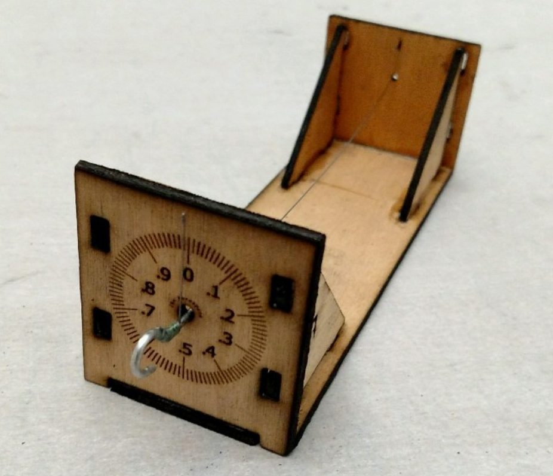
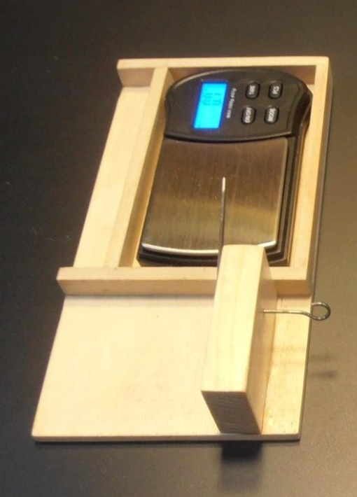

Digital Torque Meter¶
To get started on my research I decided to get data on what powers my models - a simple (well maybe not so simple) rubber band! Many indoor flyers have generated data on their motors in the past, but the process they used was very tedious. Any readings they made were taken visually while winding and that winding had to be paused to take a reading. My goal is to automate this process as much as possible, using computer technologies to gather the data.
Fortunately, in the last part of my professional career, I gathered a lot of gadgets used in building robots, which I made available to my students. My automation ideas will help me make use of that now idle stuff!
Indoor Rubber¶
The rubber used for this kind of flying generally obtained from FAI Model Supply and is sold by the pound, precisely cut to specified widths. Many builders strip the rubber to custom widths from there. A length of the final rubber strip is then cut and tied to form a loop, typically from 1.5 to 2 times the distance between the hooks. The rubber is then lubricated to make it wind and unwind smoother.
Each motor operates in a different manner after winding and unwinding sessions. As the motor ages, it must eventually be replaced to keep the model flying well. Model builders keep records on each flight to help determine when a motor has lost its ability to deliver the needed power.
Managing motor production and operation is clearly something of an art form!
Winding¶
One of the prized possessions of any indoor flyer is the winder used before each flight. Like many indoor flyers, I own a Wilder 20:1 winder that is no longer in production and expensive to acquire.
Basically, to wind a motor for a flight, it is disconnected from the model and attached to a stationary hook or a torque meter, and the winder. It is then stretched out and wound to a desired turn count, or a specified torque reading. Once wound, the motor is carefully connected to the two hooks: one on the propeller shaft and the other on a rear hook attached to the motor stick. This is a dangerous action, since a misstep can result in a broken model if the rubber tension is too high!
The basic winding data can be collected during he winding process, so let’s look at that phase of testing first.
Off Model Winding¶
The data we need to collect here is the turn count and current torque available in the motor as it is wound. That means we need to collect data on torque, probably at the rear of the motor, and turn counts at the winding end.
Counting wind turns is a simple matter as many winders have counters attached to hep with this action. However, most common counters need to be read manually, making data collection difficult. It will be simple enough to generate a signal we can feed to a computer to automate this action.
Another, better option is to build an automatic winder driven by a computer. Since the torque generated in indoor models is fairly low, a stepper motor should be able to do the winding. Stretching the motor is another job that could be automated using stepper motors or linear actuators, both common in the world of robotics these days. We will examining this problem in the next section.
Measuring the torque available in the wound motor is a more difficult problem. Let’s look closer at the typical torque meter.
Torque Meters¶
The common torque meter, is a simple device. There is a short piece of music wire, used as a torsion wire, firmly attached at one end of a metal tube or attached to a wooden frame. The other end of the wire ends at a hook where the rubber motor will be attached. At that end, a second short piece of wire is connected to the torsion wire at a 90 degree angle, and that short piece becomes an indicator. As the motor is wound, the torque twists the torsion wire causing the pointer to move in an arc. A dial is placed behind the pointer with markings to let the user determine the torque at any moment. Here is a simple one from J&H Aerospace:
Crude, but this kind of device has been a staple of indoor modeling for decades. The numbers printed on the dial are often do not correlate to any real torque value. Calibration can provide a way to generate real numbers, but many flyers just wind to some number and then fly. Over time they learn what number seems to work best for a given model.
If you do not calibrate the torque meter, then your data is not of much use to another modeler who ses a different instrument. For that reason, I want my data collection to use “real” values.
A few enterprising builders have omitted the dial and placed a digital scale under the pointer to create a digital torque meter. Here is one I found on the SciOly.org website which supports the Science Olympiad competitions. (There are indoor model airplane events in that competition!)
Again, the values measured using this setup are not real, but depend on the length of the arm that is sitting on the scale. Post processing the data will prooduce actual torque values.
This digital setup is easier to read, and simple to build, but still getting the data is a manual process. What I wanted was a torque meter that could deliver its data directly to a computer.
Microcontrollers to the Rescue¶
In part of my career I taught a college-level course in computer architecture, and introduced students to modern microcontroller systems, popular in the world of home automation and robotics. Since I have many such systems available, I selected a Raspberry PI as the computer to drive my experiments. Wha I need is a way to gather wind count and torque data for a rubber motoras it is wound, then gather turn data (and ideally torque data as it unwinds as well. The puzzle is how to take my standard flying tools and convince them to deliver the data.
Obviously, I am not going to be able to get data from the model as it flies, but some experiementers have constructed test gear to set up a motor and propeller on the end of along arm to simulate flying. Perhaps there is something there I can use in my test work.
Measuring wind counts.¶
A common way to measure turns as a motor is wound is to use a mechanical or magnetic device attached to the winder that delivers a count on some form of digital meter. I should be easy to adapt this idea to something that can feed dayta to the microcontroller. We will look at that in a following section.
The torque meter is a different problem entirely. The wire twists under torque, and reading the twist is not an easy thing to do automatically, If I elect to use the digital scale as my measuring device, I still need to dig into that meter and find a way to connect it to the microcontroller.
Some builders have managed to pull the actual measuring device in the scale, a strain gauge or “load cell” out, and get that connected to a microcontroller, but we are still left with mechanically setting up a twisting wire so it pushes on the load cell. That sounds like a lot of work! What I need is some simple way to automate the reading of the torque value from my meter.
In looking over my stash of microcontrollers, I found a Raspberry Pi camera board that easily connects to the Pi. Perhaps I can convince the Pi to process a camera view of the dial on a torque meter and give me a reading. Image processing is getting pretty good these days, so it is worth a simple test to see how this works.
Twist and Shout¶
Bad pun for an old rocker!
Before we go further, lets look at the science of the twisting wire and see what we are really doing.
The formula for the twist angle of a piece of music wire subjected to a torque can be found from this formula:
Where:
Q is the applied torque (inch lbs)
l is the length of the wire (inches)
d is the diameter of the wire (inches)
G is the modulus of elasticity for the wire (lb/in^2)
Here are some typical values for G:
diameter |
G |
|---|---|
0-0.032 |
12000000 |
0.033-0.063 |
11850000 |
0.064-0.125 |
11750000 |
0.126-0.250 |
11600000 |
To demonstrate using this math to figure out the twist angles to expect from my meter, let’s generate some code.